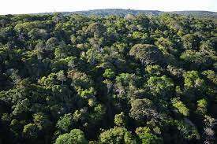

Conhecendo Japurá
Japurá é uma cidade localizada no Estado do Paraná
Sua população estimada em 2014 era de 9 095 habitantes.

Geografia
Japurá tem 165,184 quilômetros quadrados de área total do Município, e confronta-se: "ao Norte com São Carlos do Ivaí, ao Sul com São Tomé, ao Leste com São Carlos do Ivaí e a Oeste com Indianópolis". Está linha do Trópico de Capricórnio, a Noroeste do estado do Paraná, zona fisiográfica do Ivaí.

Vegetação
Japurá era coberto pela mata tropical pernifólia, que são formados por árvores de grande porte. Hoje ela está quase extinta, com exceção da reserva existente na Fazenda Lagoa, de propriedade da Companhia Melhoramentos Norte do Paraná, e de algumas pequenas reservas florestais particulares, todo esse desmatamento foi realizado com o propósito de dar início à cultura do café, hoje alternada com outras.
Centros Turisticos
Caixa d'água
O grande centro turistico de Japurá é sua grande caixa d'água, que fica localizada na praça da cidade, é o simbolo da cidade e muitos eventos acontecem em torno dela.

Igreja
O local mais movimentado de Japurá, fica perto da sorveteria, e é outro grande centro turistico, grande parte da população é catolica então ela sempre tem muitas pessoas.